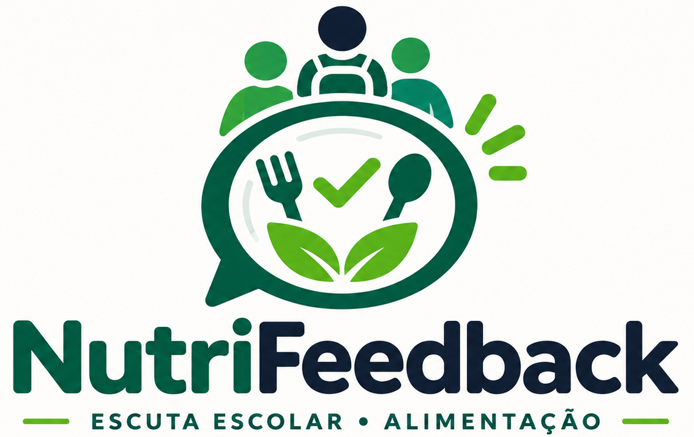

NutriFeedback
Escuta escolar e avaliação da alimentação

Projeto digital: ferramenta de coleta de percepções dos estudantes sobre a alimentação escolar. A integração de envio está configurada no projeto, mas seu funcionamento em produção não foi validado nesta apresentação.
O que é
Plataforma web de avaliação da alimentação escolar, projetada para ouvir estudantes sobre as refeições oferecidas, organizar respostas e apoiar decisões de melhoria do serviço com base nas percepções coletadas.
Pontos fortes
- Pesquisa geral referente aos últimos cinco dias letivos
- Avaliação rápida de uma refeição do dia
- Perguntas sobre consumo, satisfação, sabor, temperatura e quantidade
- Fluxo guiado por etapas, com barra de progresso e navegação simples
- Formulário sem solicitação de nome, matrícula ou e-mail
- Layout responsivo para celulares, tablets e computadores
- Endpoint de Google Apps Script configurado para envio das respostas